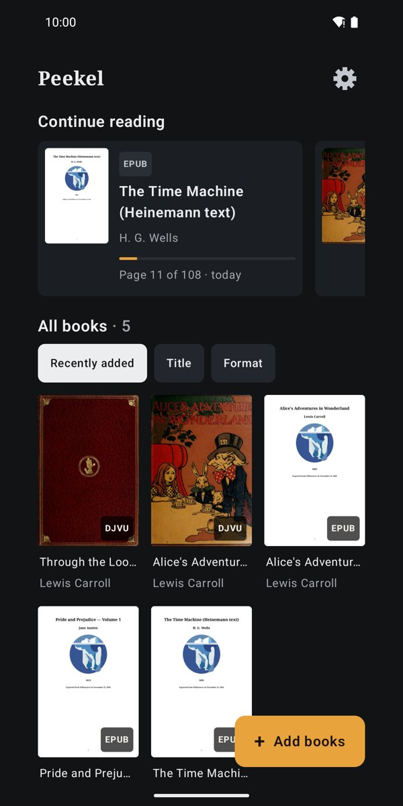
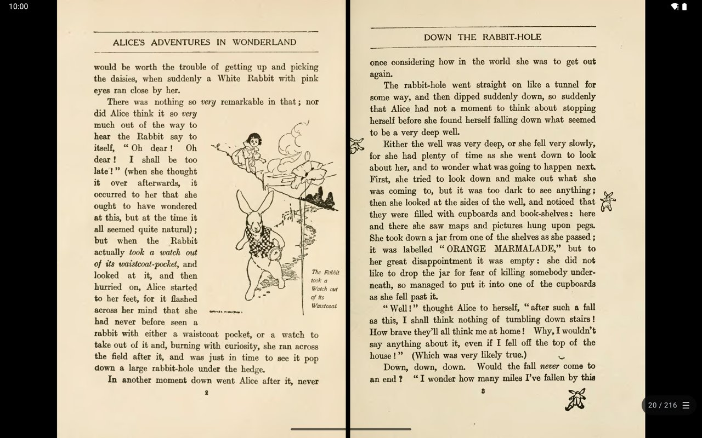

Peekel
Books and files, read where you are: on a phone or tablet, or in the terminal.
Peekel for Android
A book reader for phones and tablets: PDF, DjVu, EPUB and FB2 in one app. Scans drawn sharp at the size of the screen, text books laid out for it, one page or two or three side by side. Books from your device, your home network or online catalogues. No account, no adverts.
Coming to Google Play. Privacy policy
Peekel viewer
A file viewer for the terminal that also reads PDF and DjVu books: pictures, documents and books drawn as Sixel graphics, for Windows Terminal, Linux and SSH.
Peekel for Far Manager
Quick view for Far Manager: pictures, documents and file cards in the terminal (Sixel).

